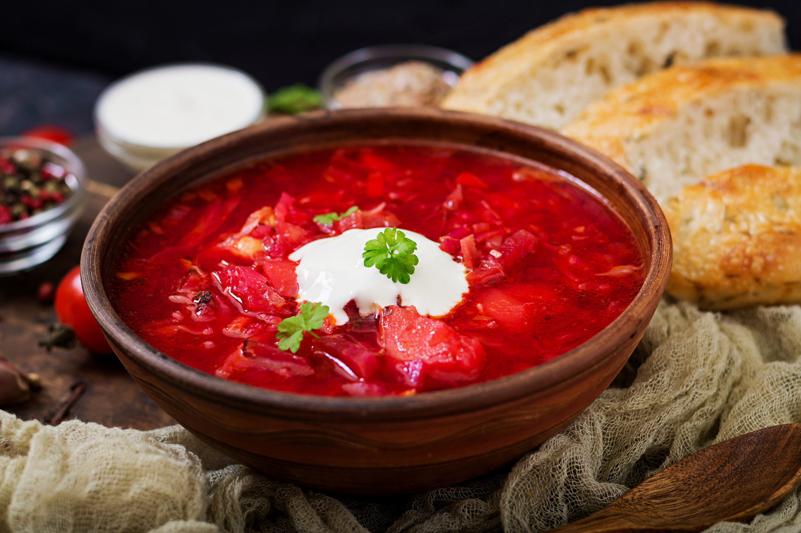
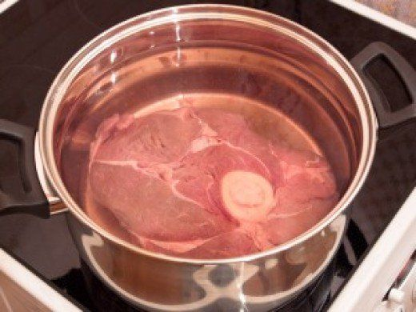
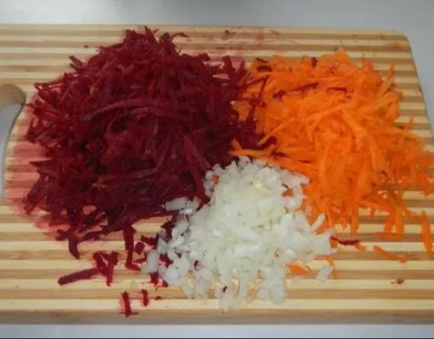
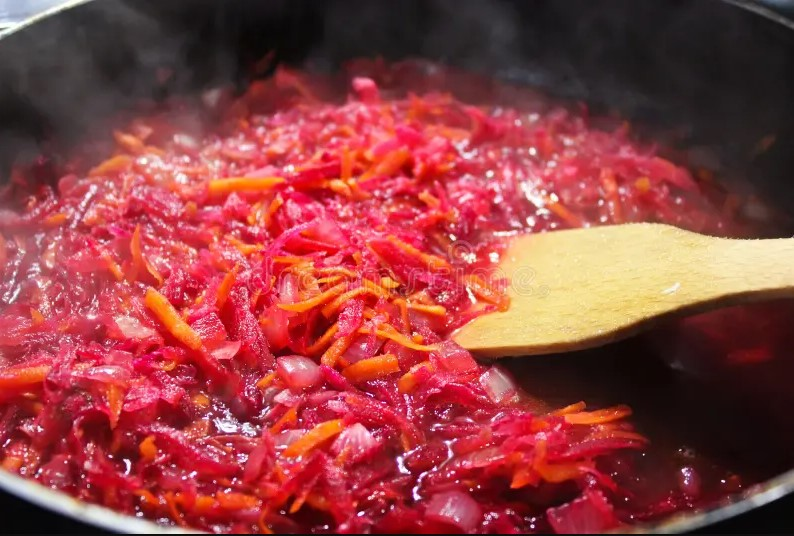
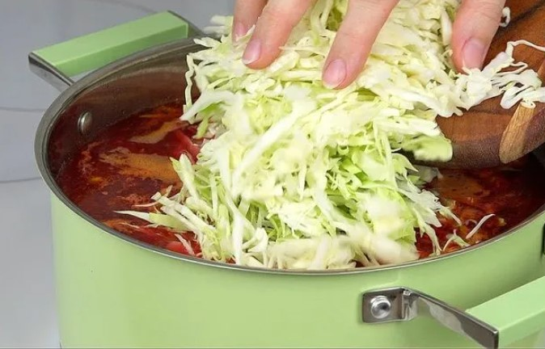
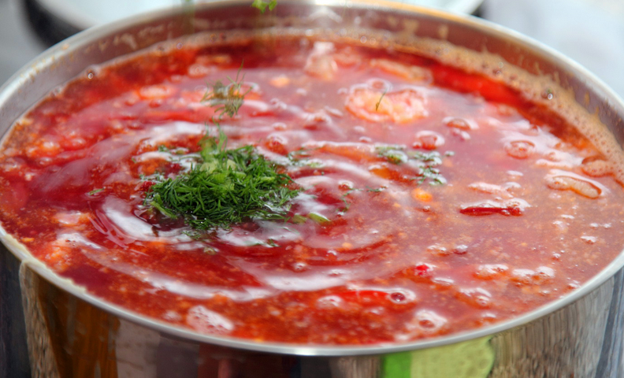

Борщ – горячий заправочный суп на основе свёклы, которая придаёт ему характерный красный цвет. Рецепт борща — это настоящее кулинарное искусство, в котором гармонично сочетаются насыщенный вкус, яркий аромат и аппетитный цвет. Классический борщ, приготовленный на ароматном мясном бульоне с добавлением свеклы, капусты, картофеля, моркови и лука, радует идеальным балансом сладковатых и кислых ноток. Овощи, тушенные вместе, создают неповторимую палитру вкусов, а добавление томатной пасты или свежих помидоров придает блюду особую глубину.
Традиционно борщ подают со свежей сметаной и рубленой зеленью, что делает его еще более нежным и аппетитным. Этот сытный, полезный и согревающий суп станет идеальным выбором для семейного обеда или уютного ужина. Существует множество рецептов приготовления борща — с курицей и со свининой, борщ горячий и холодный (свекольник), постный борщ с фасолью и другие. Традиционным считается горячий суп с мясом на кости, картофелем, свеклой, морковью и луком.




Жарьте овощи еще пять минут, затем добавьте томатную пасту. Перемешайте и оставьте свеклу, морковь, лук репчатый и томат-пасту на медленном огне еще на пять минут.

После этого нужно отделить мясо от кости, нарезать кубиками и вернуть в кастрюлю.
Выложите в кастрюлю зажарку (свеклу, морковь, лук репчатый, томатную пасту) и перемешайте. Добавьте соль, перец черный молотый и другие приправы по вкусу, варите еще пять-семь минут.

Борщ можно есть сразу после приготовления, но считается, что на следующий день он станет еще вкуснее. В тарелку можно добавить ложку сметаны или дольку лимона для легкой кислинки. К борщу обычно подают ржаной хлеб или пампушки с чесноком.
| Калорийность | 57 ккал |
| Белки | 2.9 г |
| Жиры | 5.1 г |
| Углеводы | 4.5 г |
| Вода | 89 г |
Посчитать % от РСП можно на сайте.